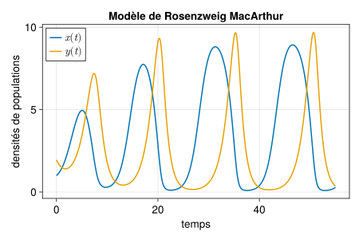

Nous considérons le modèle de dynamique de populations attribué à Rosenzweig et MacArthur (voir Rosenzweig and MacArthur (1963), Turchin (2003), Smith (2008)).
\left\{\begin{array}{l}
\dot x = \displaystyle rx\left(1-\frac{x}{K}\right) - c \frac{x}{h+x} y\\[.3cm]
\dot y = b\displaystyle \frac{x}{h+x} y - m y
\end{array}\right.
\tag{1}
Dynamiques
Il n’y a pas de difficulté particulière à la simulation par rapport au modèle de Lotka Volterra.
Nous utiliserons ici le package de visualisation graphique Makie.jl1 à la place de Plots.jl. Makie.jl permet un contrôle très approfondi du graphique. Commençons par tracer les dynamiques contre le temps dans une figure simple.
1 entièrement écrit en Julia, présenté comme “le futur” de la représentation graphique avec Julia. Une bonne introduction à Makie.
Nous utiliserons le backend CairoMakie pour la visualisation en 2D.
usingCairoMakie
Un peu comme Matplotlib en Python, Makie définit un triplet FigureAxisPlot : la figure est le conteneur de (éventuellement) plusieurs systèmes d’axes qui contiennent chacun un ou plusieurs graphique.
# on crée la figurefig1 =Figure(backgroundcolor =:transparent, resolution = (600,400), # size fontsize =18) # on crée un système d'axes en position [1,1] dans la figureax1 =Axis(fig1[1,1], xlabel ="temps", ylabel ="densités de populations", title ="Modèle de Rosenzweig MacArthur")# on trace la population x contre le temps sur le système d'axe ax1lines!(ax1, sol_rma.time, sol_rma.x, linewidth =2, linestyle =:solid, label = L"x(t)")# population ylines!(ax1, sol_rma.time, sol_rma.y, linewidth =2, linestyle =:solid, label = L"y(t)")# légendeaxislegend(position =:lt)# on affiche la figurefig1

Figure 1: Ma première figure avec Makie.jl
Dynamiques et plan de phase
Nous allons maintenant tracer un graphique plus complexe comprenant en colonne de droite les dynamiques des proies et des prédateurs sur deux lignes et en colonne de gauche le plan de phase. préparons la figure et les systèmes d’axes.
# figurefig2 =Figure(backgroundcolor =:transparent, resolution = (800,500), # size fontsize =20, font ="CMU Serif") # 3 systèmes d'axesax21 =Axis(fig2[1,1], title ="Dynamiques")ax22 =Axis(fig2[2,1], xlabel ="temps")ax23 =Axis(fig2[:,2], xlabel ="proies", ylabel ="prédateurs", title ="Plan de phase")# on agrandi un peu la deuxième colonne de la figurecolsize!(fig2.layout, 2, Auto(1.5))# ajout d'un titresupertitle =Label(fig2[0, :], "Modèle de Rosenzweig MacArthur", fontsize =30)# et d'un label d'axes commun à la première colonnesideinfo =Label(fig2[1:2, 0], "densités de populations", rotation =pi/2)# on affiche la figurefig2
On rajoute les dynamiques.
lines!(ax21, sol_rma.time, sol_rma.x, color =Cycled(1), # pick color 1 in the colorcycle linewidth =2, linestyle =:solid, label = L"x")axislegend(ax21, position =:lt, labelsize =14)lines!(ax22, sol_rma.time, sol_rma.y, color =Cycled(2), linewidth =2, linestyle =:solid, label = L"y")axislegend(ax22, position =:lt, labelsize =14)hidexdecorations!(ax21, ticks =false)fig2
Passons maintenant au plan de phase.
# trajectoirelines!(ax23, sol_rma.x, sol_rma.y, color =Cycled(1), linewidth =2, linestyle =:solid, label = L"trajectoire $$")# calcul des isoclines nullesx =LinRange(0.0, K+.1, 30)y = x# isoclines nulles de xdotnull_x_x =ones(length(y)).*0# x = 0 isocline nulle de xdotnull_x_y = r./c.*(h.+x).*(1.-x./K) # y = f(x) isocline nulle de xdot# isoclines nulles de ydotnull_y_y =ones(length(y)).*0# y = 0 isocline nulle de ydotnull_y_x =ones(length(y)).*m.*h./(b-m) # x = mh/(b-m) isocline nulle de ydot# tracé des isoclines nulle de xlines!(ax23, null_x_x, y, color =Cycled(2), linewidth =2, linestyle =:solid)lines!(ax23, x, null_x_y, color =Cycled(2), linewidth =2, linestyle =:solid, label = L"nullcline de $x$")# tracé des isoclines nulle de ylines!(ax23, x, null_y_y, color =Cycled(3), linewidth =2, linestyle =:solid)lines!(ax23, null_y_x, y, color =Cycled(3), linewidth =2, linestyle =:solid, label = L"nullcline de $y$")# tracé des équilibresscatter!(ax23, 0, 0, color =Cycled(4), label = L"équilibres$$")scatter!(ax23, K, 0, color =Cycled(4))eq_coex = [m*h/(b-m), r/c*(h+m*h/(b-m))*(1-m*h/(b-m)/K)]scatter!(ax23, eq_coex[1], eq_coex[2], color =Cycled(4))# champs de vecteurscale =10xrange =range(1, 10, length=11) yrange =range(1. ,10, length=11)derx = [rma([x y], par_rma, 0)[1]/scale for x in xrange, y in yrange]dery = [rma([x y], par_rma, 0)[2]/scale for x in xrange, y in yrange]arrows!(ax23, xrange, yrange, derx, dery, color =:lightgray, arrowsize =10, label = L"vector field$$")axislegend(ax23, position = :rt, labelsize = 14)# reduce default spacing for columns and rowscolgap!(fig2.layout, 20)rowgap!(fig2.layout, 20)fig2
Figure 2: Une figure plus complexe avec Makie.jl
Diagramme de bifurcations
Pour finir ce TP, nous allons tracer le diagramme de bifurcation du modèle de Rosenzweig MacArthur y^* en fonction de K, en identifiant les bifurcations transcritique et de Hopf vues en cours, et en estimant et représentant les extremas du cycle limite apparaissant pour K grand.
Pour rappel, il y a 3 situations asymptotiques distinctes pour le modèle de Rosenzweig MacArthur :
si : 0<K<\displaystyle\frac{mh}{b-m} : les prédateurs s’éteignent et les proies convergent vers K, l’équilibre d’extinction des deux populations est instable.
si : \displaystyle\frac{mh}{b-m} <K< h+\frac{2mh}{b-m} : proies et prédateurs co-existent à un équilibre globalement asymptotiquement stable, l’équilibre d’extinction des prédateurs est instable, l’équilibre d’extinction des deux populations est instable.
si : h+\displaystyle\frac{2mh}{b-m}<K: proies et prédateurs co-existent le long d’un cycle limite globalement asymptotiquement stable, l’équilibre d’extinction des prédateurs est instable, l’équilibre d’extinction des deux populations est instable.
Dans un premier temps nous allons calculer et représenter les différents équilibres et leur stabilité dans le plan (K, y), puis nous calculerons et rajouterons une représentation du cycle limite.
Equilibres
Nous faisons une boucle sur les valeurs de K et calculons les équilibres.
K_step =0.1# before transcriticalK_plot1 =0: K_step: m*h/(b-m)y_eq01 =ones(length(K_plot1)).*0# between transcritical and HopfK_plot2 = m*h/(b-m): K_step: h+2*m*h/(b-m)y_eq02 =ones(length(K_plot2)).*0y_co2 = [r/c*(h+m*h/(b-m))*(1-m*h/(b-m)/K_p) for K_p in K_plot2] # may have broadcasted# above HopfK_plot3 = h+2*m*h/(b-m)-K_step/5: (K_step/10) :8y_eq03 =ones(length(K_plot3)).*0y_co3 = [r/c*(h+m*h/(b-m))*(1-m*h/(b-m)/K_p) for K_p in K_plot3]; # may have broadcasted
Et nous commençons le tracé de la figure :
Code
fig3 =Figure(backgroundcolor =:transparent, resolution = (600,400), # size fontsize =18) # on crée un système d'axes en position [1,1] dans la figureax31 =Axis(fig3[1,1], xlabel = L"$K$",ylabel = L"densité de population $y^*$", title ="Bifurcations pour le modèle de Rosenzweig MacArthur")# on trace la population x # left of transcriticallines!(ax31, K_plot1, y_eq01, color =Cycled(1), linewidth =2, label = L"branche stable")# between transcritical and Hopflines!(ax31, K_plot2, y_eq02, color =Cycled(2), linewidth =2, label ="branche instable")lines!(ax31, K_plot2, y_co2, color =Cycled(1), linewidth =2)# right of Hopflines!(ax31, K_plot3, y_eq03, color =Cycled(2), linewidth =2)lines!(ax31, K_plot3, y_co3, color =Cycled(2), linewidth =2)fig3
References
Rosenzweig, M. L., and R. H. MacArthur. 1963. “Graphical Representation and Stability Conditions of Predator-Prey Interactions.”American Naturalist 97: 209–23.
Smith, H. L. 2008. “The Rosenzweig MacArthur Predator Prey Model.”
Turchin, P. 2003. Complex Population Dynamics. Princeton University Press.
---title: "Populations en interaction (2)"---## Le modèle de Rosenzweig MacArthur {#sec-rma}Nous considérons le modèle de dynamique de populations attribué à Rosenzweig et MacArthur (voir @Rosenzweig1963, @Turchin2003, @Smith2008).$$\left\{\begin{array}{l}\dot x = \displaystyle rx\left(1-\frac{x}{K}\right) - c \frac{x}{h+x} y\\[.3cm]\dot y = b\displaystyle \frac{x}{h+x} y - m y\end{array}\right.$$ {#eq-rma}### Dynamiques Il n'y a pas de difficulté particulière à la simulation par rapport au modèle de Lotka Volterra. ```{julia}#| code-fold: trueusing DifferentialEquations, DataFrames# conditions initialesx0 = 1.0y0 = 1.95etat0 = [x0, y0]# paramètresr = 1.0K = 10.0c = 1.0h = 2.0b = 2.0m = 1.0par_rma = [r, K, c, h, b, m]# temps d'integration tspan = (0.0, 55.0)tstep = .01# définition du modèlefunction rma(u, par, t) r, K, c, h, b, m = par x = u[1]y = u[2] dx = r*x*(1-x/K) - c*x/(h+x)*y dy = b*x/(h+x)*y - m*y[dx, dy]end# problèmeprob_rma = ODEProblem(rma, etat0, tspan, par_rma, saveat = tstep)# intégrationsol_rma = solve(prob_rma, reltol = 1e-6)# dataframesol_rma = DataFrame(sol_rma)rename!(sol_rma, :timestamp => :time, :value1 => :x, :value2 => :y)```Nous utiliserons ici le package de visualisation graphique `Makie.jl`^[entièrement écrit en `Julia`, présenté comme "[le futur](https://medium.com/coffee-in-a-klein-bottle/visualizing-data-with-julia-using-makie-7685d7850f06)" de la représentation graphique avec `Julia`. Une bonne [introduction à Makie](https://juliadatascience.io/DataVisualizationMakie).] à la place de `Plots.jl`. `Makie.jl` permet un contrôle très approfondi du graphique. Commençons par tracer les dynamiques contre le temps dans une figure simple.Nous utiliserons le backend `CairoMakie` pour la visualisation en 2D. ```{julia}using CairoMakie```Un peu comme `Matplotlib` en `Python`, `Makie` définit un triplet `FigureAxisPlot` : la figure est le conteneur de (éventuellement) plusieurs systèmes d'axes qui contiennent chacun un ou plusieurs graphique. ```{julia}#| output: true#| label: fig-dyn-rma#| fig-cap: Ma première figure avec `Makie.jl` # on crée la figurefig1 = Figure(backgroundcolor = :transparent, resolution = (600,400), # size fontsize = 18)# on crée un système d'axes en position [1,1] dans la figureax1 = Axis(fig1[1,1], xlabel = "temps", ylabel = "densités de populations", title = "Modèle de Rosenzweig MacArthur")# on trace la population x contre le temps sur le système d'axe ax1lines!(ax1, sol_rma.time, sol_rma.x, linewidth = 2, linestyle = :solid, label = L"x(t)")# population ylines!(ax1, sol_rma.time, sol_rma.y, linewidth = 2, linestyle = :solid, label = L"y(t)")# légendeaxislegend(position = :lt)# on affiche la figurefig1```### Dynamiques et plan de phaseNous allons maintenant tracer un graphique plus complexe comprenant en colonne de droite les dynamiques des proies et des prédateurs sur deux lignes et en colonne de gauche le plan de phase. préparons la figure et les systèmes d'axes.```{julia}#| output: true# figurefig2 = Figure(backgroundcolor = :transparent, resolution = (800,500), # size fontsize = 20, font = "CMU Serif")# 3 systèmes d'axesax21 = Axis(fig2[1,1], title = "Dynamiques")ax22 = Axis(fig2[2,1], xlabel = "temps")ax23 = Axis(fig2[:,2], xlabel = "proies", ylabel = "prédateurs", title = "Plan de phase")# on agrandi un peu la deuxième colonne de la figurecolsize!(fig2.layout, 2, Auto(1.5))# ajout d'un titresupertitle = Label(fig2[0, :], "Modèle de Rosenzweig MacArthur", fontsize = 30)# et d'un label d'axes commun à la première colonnesideinfo = Label(fig2[1:2, 0], "densités de populations", rotation = pi/2)# on affiche la figurefig2```On rajoute les dynamiques.```{julia}#| output: truelines!(ax21, sol_rma.time, sol_rma.x, color = Cycled(1), # pick color 1 in the colorcycle linewidth = 2, linestyle = :solid, label = L"x")axislegend(ax21, position = :lt, labelsize = 14)lines!(ax22, sol_rma.time, sol_rma.y, color = Cycled(2), linewidth = 2, linestyle = :solid, label = L"y")axislegend(ax22, position = :lt, labelsize = 14)hidexdecorations!(ax21, ticks = false)fig2```Passons maintenant au plan de phase.```{julia}#| output: true#| label: fig-rma-pplane#| fig-cap: Une figure plus complexe avec `Makie.jl`# trajectoirelines!(ax23, sol_rma.x, sol_rma.y, color = Cycled(1), linewidth = 2, linestyle = :solid, label = L"trajectoire $$")# calcul des isoclines nullesx = LinRange(0.0, K+.1, 30)y = x# isoclines nulles de xdotnull_x_x = ones(length(y)).*0# x = 0 isocline nulle de xdotnull_x_y = r./c.*(h.+x).*(1 .-x./K) # y = f(x) isocline nulle de xdot# isoclines nulles de ydotnull_y_y = ones(length(y)).*0# y = 0 isocline nulle de ydotnull_y_x = ones(length(y)).*m.*h./(b-m) # x = mh/(b-m) isocline nulle de ydot# tracé des isoclines nulle de xlines!(ax23, null_x_x, y, color = Cycled(2), linewidth = 2, linestyle = :solid)lines!(ax23, x, null_x_y, color = Cycled(2), linewidth = 2, linestyle = :solid, label = L"nullcline de $x$")# tracé des isoclines nulle de ylines!(ax23, x, null_y_y, color = Cycled(3), linewidth = 2, linestyle = :solid)lines!(ax23, null_y_x, y, color = Cycled(3), linewidth = 2, linestyle = :solid, label = L"nullcline de $y$")# tracé des équilibresscatter!(ax23, 0, 0, color = Cycled(4), label = L"équilibres$$")scatter!(ax23, K, 0, color = Cycled(4))eq_coex = [m*h/(b-m), r/c*(h+m*h/(b-m))*(1-m*h/(b-m)/K)]scatter!(ax23, eq_coex[1], eq_coex[2], color = Cycled(4))# champs de vecteurscale = 10xrange = range(1, 10, length=11)yrange = range(1. ,10, length=11)derx = [rma([x y], par_rma, 0)[1]/scale for x in xrange, y in yrange]dery = [rma([x y], par_rma, 0)[2]/scale for x in xrange, y in yrange]arrows!(ax23, xrange, yrange, derx, dery, color = :lightgray, arrowsize = 10, label = L"vector field$$")axislegend(ax23, position = :rt, labelsize = 14)# reduce default spacing for columns and rowscolgap!(fig2.layout, 20)rowgap!(fig2.layout, 20)fig2```### Diagramme de bifurcationsPour finir ce TP, nous allons tracer le diagramme de bifurcation du modèle de Rosenzweig MacArthur $y^*$ en fonction de $K$, en identifiant les bifurcations transcritique et de Hopf vues en cours, et en estimant et représentant les extremas du cycle limite apparaissant pour $K$ grand.Pour rappel, il y a 3 situations asymptotiques distinctes pour le modèle de Rosenzweig MacArthur :- si : $0<K<\displaystyle\frac{mh}{b-m}$ : les prédateurs s'éteignent et les proies convergent vers $K$, l'équilibre d'extinction des deux populations est instable.- si : $\displaystyle\frac{mh}{b-m} <K< h+\frac{2mh}{b-m}$ : proies et prédateurs co-existent à un équilibre globalement asymptotiquement stable, l'équilibre d'extinction des prédateurs est instable, l'équilibre d'extinction des deux populations est instable.- si : $h+\displaystyle\frac{2mh}{b-m}<K$: proies et prédateurs co-existent le long d'un cycle limite globalement asymptotiquement stable, l'équilibre d'extinction des prédateurs est instable, l'équilibre d'extinction des deux populations est instable.Dans un premier temps nous allons calculer et représenter les différents équilibres et leur stabilité dans le plan $(K, y)$, puis nous calculerons et rajouterons une représentation du cycle limite.#### EquilibresNous faisons une boucle sur les valeurs de $K$ et calculons les équilibres.```{julia}K_step = 0.1# before transcriticalK_plot1 = 0: K_step: m*h/(b-m)y_eq01 = ones(length(K_plot1)).*0# between transcritical and HopfK_plot2 = m*h/(b-m): K_step: h+2*m*h/(b-m)y_eq02 = ones(length(K_plot2)).*0y_co2 = [r/c*(h+m*h/(b-m))*(1-m*h/(b-m)/K_p) for K_p in K_plot2] # may have broadcasted# above HopfK_plot3 = h+2*m*h/(b-m)-K_step/5: (K_step/10) :8y_eq03 = ones(length(K_plot3)).*0y_co3 = [r/c*(h+m*h/(b-m))*(1-m*h/(b-m)/K_p) for K_p in K_plot3]; # may have broadcasted```Et nous commençons le tracé de la figure :```{julia}#| code-fold: true#| output: true fig3 = Figure(backgroundcolor = :transparent, resolution = (600,400), # size fontsize = 18) # on crée un système d'axes en position [1,1] dans la figureax31 = Axis(fig3[1,1], xlabel = L"$K$", ylabel = L"densité de population $y^*$", title = "Bifurcations pour le modèle de Rosenzweig MacArthur")# on trace la population x # left of transcriticallines!(ax31, K_plot1, y_eq01, color = Cycled(1), linewidth = 2, label = L"branche stable")# between transcritical and Hopflines!(ax31, K_plot2, y_eq02, color = Cycled(2), linewidth = 2, label = "branche instable")lines!(ax31, K_plot2, y_co2, color = Cycled(1), linewidth = 2)# right of Hopflines!(ax31, K_plot3, y_eq03, color = Cycled(2), linewidth = 2)lines!(ax31, K_plot3, y_co3, color = Cycled(2), linewidth = 2)fig3```